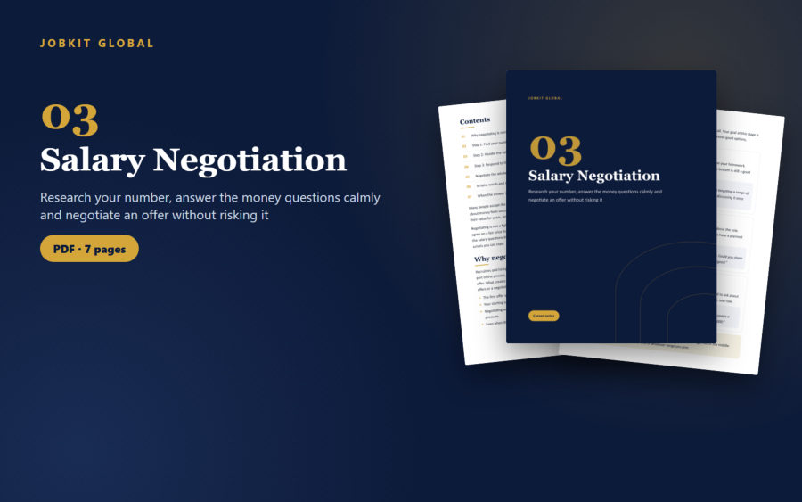

Career series
Salary Negotiation
Research your number, answer the money questions calmly and negotiate an offer without risking it

Many people accept the first number they hear. Not because it is the right number, but because talking about money feels uncomfortable, risky or a little greedy. The result is often a salary that stays below their value for years, since future raises are usually calculated from your starting point.
Negotiating is not a fight. It is a normal, expected conversation in which you and the employer try to agree on a fair price for your work. This guide gives you a simple method: prepare your number, handle the salary questions during the process, respond to an offer, and negotiate the whole package, with scripts you can copy.
Get the complete guide
Printable PDF with every section, the templates and the checklist. Instant download.
Why negotiating is normal (and rarely risky)
Recruiters and hiring managers negotiate all the time. For them, a polite, well-prepared counteroffer is part of the process, not an insult. A respectful request is very unlikely to make a company withdraw an offer. What creates problems is the way it is done: aggressive tone, ultimatums, invented competing offers or a negotiation that drags on for weeks.
- The first offer usually leaves some room: employers often plan a range, not a single fixed number.
- Your starting salary is the base for future raises, bonuses and sometimes retirement contributions.
- Negotiating well shows skills employers value: preparation, clear communication and calm under pressure.
- Even when the base salary cannot move, other parts of the package often can.
Step 1: Find your number before anyone asks
You cannot negotiate well without a realistic target. Your number should come from market research and your own situation, not from what you earn today or what feels comfortable to say.
- Collect market data: look at salary ranges in job postings (many US states and other countries now require pay ranges in ads), salary websites, industry surveys and public pay scales for the public sector.
- Ask real people: former colleagues, people in your network who hold the same role, recruiters who specialize in your field. Ask about ranges, not about their personal salary.
- Adjust for your profile: years of experience, rare skills, certifications, the size of the company and the cost of living in the location.
- Set three numbers: your target (what you will ask for), your realistic goal (what would make you happy) and your walk-away point (below which you would decline).
Role and location: ...
Market range found (sources): from ... to ...
My strongest arguments (results, skills, scarcity): 1. ... 2. ... 3. ...
Target number (top of my range): ...
Realistic goal: ...
Walk-away point: ...
Other things that matter to me (remote work, vacation, training, title): ...
Step 2: Handle the salary question during interviews
What are your salary expectations?
What they test: They check that you fit the budget and that you have done your homework.
How to answer: If you know the market, give a researched range whose bottom is still a good outcome for you. Mention that you are looking at the whole package.
Based on my research for similar roles in this area and my experience, I'm targeting a range of 68,000 to 75,000. That said, I'm looking at the full package, so I'm open to discussing it once we've both confirmed the fit.
Can you tell us your budget first?
What they test: This is the question you ask back when you lack information about the role.
How to answer: Politely turn the question around. Companies almost always have a planned range.
I'd like to understand the scope of the role a bit better before giving a number. Could you share the range you have budgeted for this position? That will help me see if we're aligned.
What do you earn today?
What they test: They use your current pay as an anchor for their offer.
How to answer: In several US states and other places, employers are not allowed to ask about salary history; check the rules where you live. Either way, redirect to the value of the new role.
I'd prefer to focus on the value of this role rather than my current package, which covers a different scope. For this position, based on my research, I'm targeting 68,000 to 75,000.
Step 3: Respond to the offer
When the offer arrives, the most important thing is to avoid answering on the spot. Thank them, show enthusiasm for the role and ask for the full details in writing. Then take a day or two to review it calmly.
Continued in the full guide
Negotiate the whole package, not just the salary
Sometimes the base salary is truly fixed: strict salary bands, internal fairness rules or a tight budget. In that case, other elements can add real value to your offer. Choose the two or three that matter most to you instead of asking for everything.
Continued in the full guide
Scripts, words and mistakes to avoid
Continued in the full guide
When the answer is no
Sometimes the employer cannot move at all. That is not a failure: you asked professionally, and you now have complete information to decide. Compare the final offer with your walk-away point and your priorities, not with your disappointment.
Continued in the full guide
Negotiating is a skill, not a personality trait. Prepare once, stay calm and respectful, and you will never again leave money on the table out of discomfort.
What you get in the full guide
- Why negotiating is normal (and rarely risky)
- Step 1: Find your number before anyone asks
- Step 2: Handle the salary question during interviews
- Step 3: Respond to the offer
- Negotiate the whole package, not just the salary
- Scripts, words and mistakes to avoid
- When the answer is no
- Checklist: Before you negotiate
Get the complete guide
Printable PDF with every section, the templates and the checklist. Instant download.
Need a resume too?
The JobKit Global toolkit: 3 ATS-friendly resume templates, 3 cover letters, a job-search tracker and an interview guide.